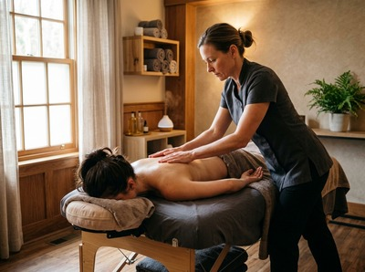

★★★★★ Quality gate failures: readability. Review and edit before removing this notice. ★★★★★
If you carry chronic muscle tension alongside stress, poor sleep, or low mood, an aromatherapy deep tissue oil massage in Glasgow addresses all of it in a single session.
This is not a purely relaxation treatment. It works on the deeper layers of muscle tissue while therapeutic-grade essential oils are absorbed through the skin and inhaled, supporting your body and your nervous system at the same time.
This treatment combines firm, targeted technique with the healing properties of carefully chosen essential oils. Your therapist works through the surface muscle layers using flowing strokes. Then they apply focused pressure to release deep knots, adhesions, and chronic tension.
The essential oils are blended into a warm carrier oil and chosen to match your needs. Lavender for stress and poor sleep. Peppermint for tired muscles and tension headaches. Sweet orange to lift mood. Eucalyptus to ease inflammation and aid recovery. Each session is built around what your body needs on the day.

At Serendipity Massage Therapy & Wellness, the oil blend is chosen with you before the session starts. This ensures the treatment works for your specific goals — not a generic formula.
This treatment suits office workers and professionals in Glasgow city centre who build up tension from long hours at a screen. It works well when stress and physical tightness are feeding each other.
It is also a strong choice if you are recovering from intense physical activity or dealing with chronic back or neck pain. It works well for stress-related sleep problems too. If a standard deep tissue session feels too intense on its own, the oil and essential blend softens the experience without reducing the results.
Sessions run for 60 or 90 minutes. Before you begin, your therapist will ask about the areas you want to focus on, your pressure preference, and any allergies or sensitivities. This shapes the oil blend used in your session.
You will be asked to undress to your comfort level. Draping is used throughout, so only the area being worked on is ever uncovered. The session opens with slower, warming strokes to prepare the muscle tissue before deeper work begins.
Afterwards, most clients feel physically loose and mentally clear. Mild tenderness in worked areas is normal and usually settles within 24 hours. Drinking water and resting after the session helps your body process the treatment. You can book your session online and note any preferences in the booking comments.
At Serendipity Massage Therapy & Wellness, every therapist is trained to the standard developed by head therapist Jariya Malone. Her background in traditional Thai technique shapes how oil massage and deeper tissue work are brought together.
The result is a treatment that is precise and genuinely restorative. Whether you are visiting for the first time or returning as a regular client, the standard is consistent. Book your aromatherapy deep tissue massage at our Hope Street studio in Glasgow city centre.
You will be asked to undress to a level you are comfortable with, as the oils are applied directly to the skin. Professional draping is used throughout, so only the area being worked on is ever uncovered.
Your comfort and privacy are maintained at all times. If you have any concerns, let your therapist know before the session begins.
Sessions are available in 60 and 90-minute durations. A 60-minute session allows for focused work on one or two key areas. Ninety minutes gives your therapist time to work across the full body with deeper attention throughout.
For chronic or widespread muscle tension, the longer session is generally recommended.
Most clients leave feeling physically looser and mentally calmer than when they arrived. Some mild tenderness in deeply worked areas is normal and usually clears within 24 to 48 hours.
The essential oils keep working after you leave the treatment room. Rest and drink water in the hours after your session to support the results.
Your therapist will ask about allergies and skin sensitivities before choosing the oil blend. If you have a known reaction to specific essential oils or nut-based carrier oils, alternatives are used.
Please mention any skin conditions or sensitivities when booking or at the start of your appointment.
For chronic muscle tension or ongoing stress, a session every two to four weeks delivers the most consistent results. Monthly visits work well for most people once acute tension has been addressed.
Your therapist can advise on a schedule suited to your goals and lifestyle at the end of your first session.
A standard aromatherapy massage uses lighter, flowing strokes aimed at relaxation and gentle oil absorption. The deep tissue version adds firmer, focused pressure to reach the deeper layers of muscle tissue.
Both use therapeutic-grade essential oils chosen for your needs. The deep tissue approach delivers more targeted relief for chronic tension, knots, and postural strain — alongside the mood and nervous system benefits of aromatherapy.